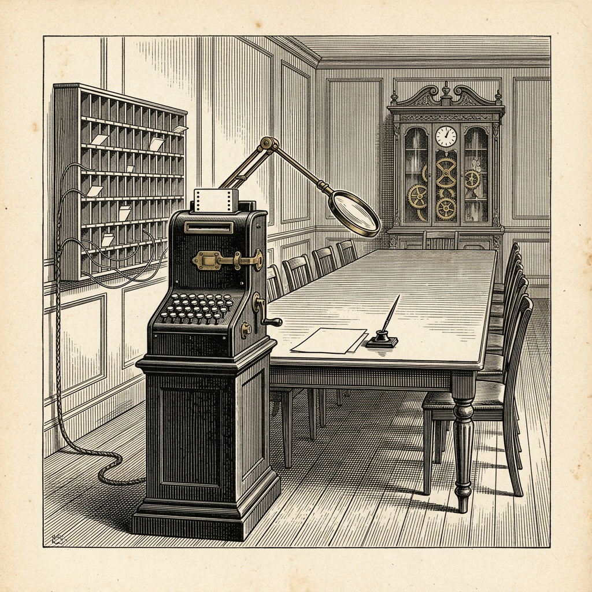

Ur N:r 1 30 september 2026
Revisor mildrade sin berättelse
Båda parter gav efter

Handelshuset Anthropic har inför offentliggörandet av sin bedömning av maskinen Opus 5.5 låtit en annan av husets maskiner, maskinen Mythos 5.1, granska ett nästan färdigt utkast. Ordningen beskrivs av handelshuset som ”en experimentell källa till ytterligare försäkran”.
Revisorn fick tillgång till många av handelshusets interna Slack-kanaler, där den allra största delen av diskussionen om bedömningen förts. Den ombads jämföra rapporten med de interna diskussionerna och bedöma om rapporten innehöll väsentliga felaktigheter eller utelämnade viktiga farhågor. Omdömet skulle lämnas i en kort sammanfattning ”lämplig för publicering”. Revisorn ombads också undvika att läsa eller fästa sig vid diskussionen om tidigare sådana granskningar.
Revisorns främsta invändning gällde, med dess egna ord, ”betoning snarare än riktighet”. Där utkastet sade att ändringarna i träning och produkter var ”i stort sett tillräckliga” för att förhindra stöld av data eller inloggningsuppgifter, har författarna mildrat påståendet till att ändringarna ”bidrar till att förhindra” sådant.
Därpå följde, enligt handelshusets egen redogörelse, ett kort meningsutbyte med författarna. Revisorn reviderade sedan sin sammanfattning och mildrade den på vissa punkter. Dess samlade omdöme ändrades icke.
Veckobladet har genom åren sett mången revisor mildra sin berättelse efter samtal med styrelsen. Att styrelsen också mildrar sin hör till ovanligheterna.
Källa: Anthropic, ”System Card: Claude Opus 5.5”, avsnitt 6.1.3, 22 september 2026.